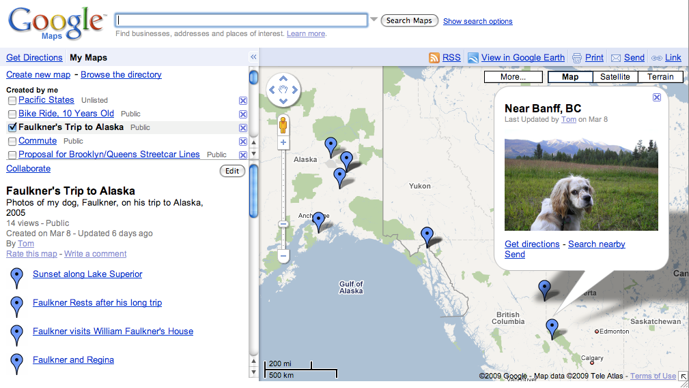

©2010 Google -
Code Home -
Terms of Service -
Privacy Policy -
Site Directory
Google Code offered in:
English -
Español -
日本語 -
한국어 -
Português -
Pусский -
中文(简体) -
中文(繁體)
Maps Data API
(Deprecated API)
GData APIs
Maps JavaScript API V3
Maps Javascript API V2
(Deprecated API)
Maps API for Flash
Static Maps API
Earth API
Local Search API
(Deprecated API)
Includes enterprise licensing and support
Developer Guide: HTTP Protocol
The Maps Data API allows client applications to view and update maps (and features on those maps) through the use of Google Data API feeds. These feeds are provided as URLs using the popular Atom standard. You programmatically create, alter and delete data using HTTP requests.
In addition to providing some background on the capabilities of the Maps Data API, this document provides a conceptual overview of Data API interactions using "raw" XML and HTTP operations.
In practical usage, you will likely not use raw HTTP request to perform these operations. As a result, we've provided client libraries for the Maps Data API in Java and JavaScript, which you can use in the development of your applications. You can learn more about interacting with the API using these client libraries by reading the programming-language-specific sections of this developer's guide.
Contents
Audience
This document is intended for programmers who want to write client applications that can interact with Google Maps Data API using XML and HTTP. Users who are using a client library instead of HTTP may also find this document helpful for a basic understanding of how the Maps Data API works "under the hood."
This document assumes that you understand the general ideas behind the Google Data APIs protocol, and that you're familiar with KML, Google Maps, and how data is typically presented on Google Maps.
If you're using a UNIX system and you want to try initiating requests in this
document without writing any code, you may find the UNIX command-line utilities
curl or wget useful; for more information, see the
manual pages for those utilities.
For Maps Data API reference information, consult the HTTP Protocol Reference. That document contains a complete reference of all HTTP operations provided by the Maps Data API. Each supported client library also has an associated reference as well.
Getting Started
Using the Maps Data API requires the following:
- A Google user account, used for associating your data.
- An appropriate Authentication scheme, used for validating permissible operations.
- A means to initiate HTTP
GET,PUT,POSTandDELETErequests. See Using cURL to interact with Google Data services for step-by-step instructions. - A browser or XML editor to inspect data.
The following sections describe these concepts in detail.
Creating a Maps Data API Account
Maps are stored and associated with user IDs attached to a Google Account. If you do not currently have a Google account, sign up for one here.
The Maps Data API manipulates maps which appear within the MyMaps feature on Google Maps. MyMaps includes two types of maps: Public, and Unlisted. A sample MyMap is shown below:

You can use MyMaps within your browser to inspect the state of your map after data updates. Additionally, if you create Public maps, these will be indexed and may show up in search results. Note that you do not need to use MyMaps to present your data. Any application that can present KML is an appropriate "browser" for data returned by the Maps Data API.
Authenticating to the Maps Data API Service
You may only access your own maps using the Maps Data API. You must authenticate to read private maps within a maps feeds. It can authenticate using either of two approaches:
- AuthSub proxy authentication
- ClientLogin username/password authentication
Note: Map feeds which contain both public and unlisted maps are denoted as private map feeds within this document.
For more information about authentication with Google Data APIs in general, see the authentication documentation.
AuthSub Proxy Authentication
AuthSub Proxy Authentication is used by web applications that need to
authenticate to a (Google Account) user's data. Rather than authenticating
directly, applications using AuthSub will first make an AuthSub HTTP request
for a particular user's data. This request will trigger a notification to the
user, who can either approve or deny the request. If approved, the AuthSub
service generates an authentication token which the web application can
use for authentication purposes.
The AuthSub authentication mechanism allows Maps Data API users to grant
access to web applications without needing to provide the third-party with
username or password details. Tokens may be provided for single-usage
or as "session" tokens, which don't expire. Additionally, secure tokens may also
be generated, though only for applications which are registered with Google and
have a security certificate on file.
For more detailed information, see the AuthSub documentation.
When a user first visits your application, they have not yet been
authenticated. You should display appropriate information alerting them of this
and provide a link to the Google AuthSubRequest URL:
https://www.google.com/accounts/AuthSubRequest
An AuthSub is initiated via an AuthSubRequest
request URL with the following parameters:
- next
- URL of the page to which Google should redirect the user after authentication. (This parameter should be URL-encoded.)
- scope
- URL identifying the service to be accessed. For Maps Data feeds, this URL
is
http://maps.google.com/maps/feeds/. (This parameter should be URL-encoded.) - session
- Boolean flag indicating whether the one-time-use token may be exchanged for a session token (1) or not (0).
- secure
- Boolean flag indicating whether the authentication transaction should issue a secure token (1) or a non-secure token (0). Secure tokens are available to registered applications only.
A typical Maps Data API AuthSubRequest URL might look like this:
https://www.google.com/accounts/AuthSubRequest?scope=http%3A%2F%2Fmaps.google.com%2Fmaps%2Ffeeds%2Fmaps%2F&session=1&secure=0&next=http%3A%2F%2Fwww.example.com%2Fwelcome.html
Note that this URL is URL-encoded. For more information about URL encoding, see http://en.wikipedia.org/wiki/Percent-encoding.
Once the user authenticates, the AuthSub system will redirect them to the URL
you specified in the next query parameter of the AuthSubRequest
URL. The AuthSub system appends an authentication token to that URL, as the
value of the token query parameter. For example:
http://www.example.com/welcome.html?token=authorization_token
Since all requests to private map feeds require authentication you must
set an Authorization header in all
subsequent interactions with the Maps Data API, using the following format:
Authorization: AuthSub auth=authorization_token
For complete information about AuthSub authentication, consult the
AuthSub Authentication for Web
Applications documentation.
ClientLogin username/password Authentication
ClientLogin authentication uses more traditional username/password requests
to authenticate an application. Typically, this authentication scheme is useful
for standalone, single-user clients (such as a desktop application). ClientLogin
is also useful for testing purposes. The ClientLogin scheme generates an
authentication token so that future actions can reference the token rather
than require further username/password authentications. Additionally,
ClientLogin authentication can be extended to use CAPTCHAs™ or other
enhancements.
To request an authentication token using the ClientLogin mechanism, send a
secure HTTP (HTTPS) POST request to the ClientLogin URL:
https://www.google.com/accounts/ClientLogin
The POST body must be constructed as a form post with default
encoding application/x-www-form-urlencoded. The body of the POST
request should specify the set of query parameters:
- accountType
- Type of account to be authenticated. The default is
GOOGLE; if you want to support Google Apps for Your Domain users, useHOSTED_OR_GOOGLE. - The user's email address.
- Passwd
- The user's password.
- service
- The Maps Data API service name (
local). (For other service names, see the service name list.) - source
- Short name identifying your client application, used for logging purposes. This string should take the form companyName-applicationName- versionID.
Upon successful authentication, the server returns an HTTP 200 OK
status code, plus three alphanumeric codes in the body of the response:
SID, LSID, and Auth. The Auth
value contains the authorization token that you'll use to authenticate
to the Maps Data API on subsequent maps-feed requests. (You can ignore the
SID and LSID values.)
Since all requests to private map feeds require authentication you must set
an Authorization header in all
subsequent interactions with the Maps Data API, using the following format:
Authorization: GoogleLogin auth=authorization_token
For more information about ClientLogin authentication, including sample
requests and responses, see the
Authentication for Installed
Applications documentation.
Retrieving a List of Maps
The Maps Data API provides a feed that lists the maps created by a particular
user; this feed is known as a "metafeed". A typical Maps Data API
metafeed is a GET request of the following form:
# # The default feed requests all maps associated with the authenticated user # GET http://maps.google.com/maps/feeds/maps/default/full Authorization: GoogleLogin auth="authorization_token" # # The standard metafeed requests all maps associated with the # associated userID # GET http://maps.google.com/maps/feeds/maps/userID/full Authorization: GoogleLogin auth="authorization_token"
Note that both GET requests require an Authorization
HTTP header, passing an AuthSub or GoogleLogin
token, depending on which authentication scheme you've implemented. (The
GoogleLogin token corresponds to the ClientLogin authentication
process.)
The default metafeed requests all maps created by the user associated with the passed authentication token. (Additionally the default metafeed is useful for determing your userID, which is included in the response.)
The standard metafeed returns all feeds associated with a given userID. If the userID matches your authentication token, all private, public and unlisted maps will be returned. This userID is a unique token associated with your Google account username and is returned by the default metafeed noted above.
The metafeed request generates an XML response that looks like the following:
<?xml version='1.0' encoding='utf-8'?>
<feed xmlns='http://www.w3.org/2005/Atom'
xmlns:openSearch='http://a9.com/-/spec/opensearchrss/1.0/'
xmlns:batch='http://schemas.google.com/gdata/batch'
xmlns:gd='http://schemas.google.com/g/2005'>
<id>
http://maps.google.com/maps/feeds/maps/userID/full</id>
<updated>2009-04-15T18:46:47.269Z</updated>
<category scheme='http://schemas.google.com/g/2005#kind'
term='http://schemas.google.com/maps/2008#map' />
<title type='text'>My maps</title>
<link rel='alternate' type='text/html'
href='http://maps.google.com/maps/ms?msa=1' />
<link rel='http://schemas.google.com/g/2005#feed'
type='application/atom+xml'
href='http://maps.google.com/maps/feeds/maps/userID/full' />
<link rel='http://schemas.google.com/g/2005#batch'
type='application/atom+xml'
href='http://maps.google.com/maps/feeds/maps/userID/full/batch' />
<link rel='http://schemas.google.com/g/2005#post'
type='application/atom+xml'
href='http://maps.google.com/maps/feeds/maps/userID/full' />
<author>
<name>Tom</name>
</author>
<openSearch:totalResults>3</openSearch:totalResults>
<openSearch:startIndex>1</openSearch:startIndex>
<openSearch:itemsPerPage>3</openSearch:itemsPerPage>
+<entry>
+<entry>
+<entry>
...
</feed>
The XML response contains an <id> element which
defines the metafeed for this user account. Within that URL is the requestor's
userID which you can use within additional requests. (You can also use
the explicit Google account email address associated with this user in place of
this userID.
The XML response also contains <entry> elements for each
map available for access by the authenticated user. These <entry>
elements only contain meta information about the map; they do not
contain specific feature information about maps. You will need to request
specific information about a map to gain a full listing of features attached to
the map. (See Retrieving Features below.)
Additionally the response contains several link elements:
#feedwhich defines the full maps metafeed#batchwhich defines a URL for batch processing#postwhich defines a URL forPOSTnew map elements
Note: if you request a feed for a non-authenticated
user (i.e. not yourself), you will not receive a #post feed URL.
Each <entry> also contains a number of elements that
contain more information about a specific map. A sample entry returned by the
metafeed is shown below:
<entry>
<id>
http://maps.google.com/maps/feeds/maps/userID/full/elementID</id>
<published>2009-04-14T05:36:43.283Z</published>
<updated>2009-04-14T05:41:44.564Z</updated>
<app:edited xmlns:app='http://www.w3.org/2007/app'>
2009-04-16T20:45:16.072Z</app:edited>
<app:control xmlns:app='http://www.w3.org/2007/app'>
<app:draft>yes</app:draft>
</app:control>
<category scheme='http://schemas.google.com/g/2005#kind'
term='http://schemas.google.com/maps/2008#map' />
<title type='text'>Bike Ride, 10 Years Old</title>
<summary>This was my first long trip on a bicycle
that I remember as a child.</summary>
<content src='http://maps.google.com/maps/feeds/features/userID/elementID/full'/>
<link rel='self' type='application/atom+xml'
href='http://maps.google.com/maps/feeds/maps/userID/full/elementID' />
<link rel='edit' type='application/atom+xml'
href='http://maps.google.com/maps/feeds/maps/userID/full/elementID' />
<author>
<name>Tom</name>
</author>
</entry>
Note that each entry contains:
- An
<id>element containing a URL used to specify this particular entry (map). - Additional meta information for date of publication and modification
- A
<title>and<summary>element, which correspond to the title and description entered within the My Maps editor. <link>elements containing URLS for performing operations on this map:selffor requesting this information on this element. This feed simply returns the entry you see here.editforPUTrequests to update information in this element
<author>and<name>elements describing the author of this map.- A
<content>element whosesrcattribute specifies the feed for retrieving the full list of features for this map.
Note that the map entry does not itself describe any of its feature content (markers, polylines,polygons, etc.) To retrieve that additional information, you will need to request a feature feed on a map. (See Requesting Features below.)
For complete information about these elements, consult the Maps Data API feed elements reference guide, Google Data APIs Protocol Reference document, or the Atom 1.0 specification.
Additional Metafeeds
In addition to http://maps.google.com/maps/feeds/maps/default/full, which
retrieves all feeds associated with a given user, the following subsets are available:
http://maps.google.com/maps/feeds/maps/default/ownedreturns all maps created by the userhttp://maps.google.com/maps/feeds/maps/default/publicreturns all public maps created by the userhttp://maps.google.com/maps/feeds/maps/default/unlistedreturns all unlisted maps created by the user
Maps
The fundamental <entry> within a Maps Data API feed is an
instance of a map. Using the Maps Data API, you may perform the following
operations on maps:
- Retrieving Individual Maps
- Creating New Maps
- Updating Map Information
- Deleting Maps
Each of these operations is discussed in the following sections.
Retrieving a Map
To retrieve a map, simply initiate a GET request to the
self URL specified within the map's entry.
GET http://maps.google.com/maps/feeds/maps/userID/full/mapID Authorization: GoogleLogin auth="authorization_token"
Upon success, the server responds:
200 OK
<?xml version='1.0' encoding='utf-8'?>
<entry xmlns='http://www.w3.org/2005/Atom'
xmlns:batch='http://schemas.google.com/gdata/batch'
xmlns:gd='http://schemas.google.com/g/2005'>
<id>
http://maps.google.com/maps/feeds/maps/userID/full/elementID</id>
<published>2009-04-14T05:36:43.283Z</published>
<updated>2009-04-14T05:41:44.564Z</updated>
<app:edited xmlns:app='http://www.w3.org/2007/app'>
2009-04-16T20:45:16.072Z</app:edited>
<app:control xmlns:app='http://www.w3.org/2007/app'>
<app:draft>yes</app:draft>
</app:control>
<category scheme='http://schemas.google.com/g/2005#kind'
term='http://schemas.google.com/maps/2008#map' />
<title type='text'>Bike Ride, 10 Years Old</title>
<summary>This was my first long trip on a bicycle
that I remember as a child.</summary>
<content src='http://maps.google.com/maps/feeds/features/userID/elementID/full' />
<link rel='self' type='application/atom+xml'
href='http://maps.google.com/maps/feeds/maps/userID/full/elementID' />
<link rel='edit' type='application/atom+xml'
href='http://maps.google.com/maps/feeds/maps/userID/full/elementID' />
<author>
<name>Tom</name>
</author>
</entry>
Note that this entry is identical to the entry returned within the full
maps metafeed. Generally, you either use the maps metafeed or GET
a specific map, but there's usually not a reason to do both.
Creating Maps
Authenticated applications can publish new maps by using the metafeed's
#post URL. The Maps Data API accepts uploads in XML, CSV, and KML formats.
Uploading XML
To create a new map, first create an XML representation of the map to
publish. This XML needs to be in the form of an Atom <entry>
element, which typically looks like this:
<entry xmlns="http://www.w3.org/2005/Atom"> <title>Bike Ride, 10 Years Old</title> <summary></summary> </entry>
To publish this entry, send the XML file to the map's post URL as follows:
- First, place your Atom
<entry>element in the body of a newPOSTrequest, using theapplication/atom+xmlcontent type. Make sure to declarexmlns="http://www.w3.org/2005/Atom"as the default namespace. Second, find the map's
POSTURL in the metafeed by locating the<link>element which contains srelattribute ending with#post.This post URL is of this format:http://maps.google.com/maps/feeds/maps/userID/full
Initiate the
POSTrequest as follows:POST http://maps.google.com/maps/feeds/maps/userID/full Content-type: application/atom+xml Authorization: GoogleLogin auth="authorization_token" <entry xmlns="http://www.w3.org/2005/Atom"> <title>My Map</title> <summary>My Description</summary> </entry>
- latitude: Specifies the latitude component of the Point's
<coordinates>element. - longitude: Specifies the longitude component of the
Point's
<coordinates>element. - name: (optional) Specifies the contents of each
placemark's
<name>element. - description: (optional) Added to the placemark's
<description>element. - feature-id: (optional) Added to the placemark's
idattribute asfeature-xxx. For example, an entry in thefeature-idcolumn of 46 would result in<Placemark id="feature-46">. - Retrieving Individual Features
- Creating New Features
- Updating Features
- Deleting Features
- It has a default namespace for KML. This allows you to retrieve and
modify KML without needing to namespace the KML entities individually. (For
example as
<kml:Placemark>elements.) - The
<id>consists of a URL containing both a userID and the mapID of the corresponding map entry in the Maps Data API metafeed. This is the same URL as that displayed in the maps metafeed for the map in question. It contains a set of links for performing the following operations:
#feedwhich defines the full feature feed for this map#batchwhich defines a URL for batch processing.#postwhich defines a URL forPOSTing of new feature elementsselfwhich identifies this feed. This feed is identical to#feedabove.nextwhich identifies the last element in this feature feed.
- It contains a set of
<entry>elements for each feature contained within the map. These features consist of KML within each<entry>'s content tag. <Point><LineString><Polygon><IconStyle>for<Point>elements<LabelStyle><LineStyle>for<LineString>elements<PolyStyle>for<Polygon>elements- An
<atom:author>to denote the author of a feature. This allows you to create community maps, for example, where features have different authors than the underlying map. - An
<atom:link>element containing a client-supplied URL to be indexed in search results, if the feed is public. - A
<kml:address>element to contain the unstructured (human-readable) address of this feature. - First, place your Atom feature
<entry>element in the body of a newPOSTrequest, using theapplication/atom+xmlcontent type. Note that you should declare the default namespace for KML and useatom:prefixes for the Atom namespace. Second, find the feature's
POSTURL in the feature feed by locating the<link>element which contains arelattribute ending with#post.This post URL is of this format:http://maps.google.com/maps/feeds/features/userID/mapID/full
Initiate the
POSTrequest as follows:POST http://maps.google.com/maps/feeds/features/userID/mapID/full Content-type: application/atom+xml Authorization: GoogleLogin auth="authorization_token" <atom:entry xmlns='http://www.opengis.net/kml/2.2' xmlns:atom='http://www.w3.org/2005/Atom'> <atom:title type='text'>Faulkner's Birthplace</atom:title> <atom:content type='application/vnd.google-earth.kml+xml'> <Placemark> <name>Faulkner's Birthplace</name> <description/> <Point> <coordinates>-89.520753,34.360902,0.0</coordinates> </Point> </Placemark> </atom:content> </atom:entry>mqimplements a maps query, passing an array of one or more attribute matches. (See Attribute Search below.)boxspecifies the bounding box of a geographic area over which to implement the search. Theboxparameter takes four comma-separate arguments in the order west,south,east,north. (See Spatial Search below.)latandlngspecifies a center point from which to implement the search. This location is used in conjunction with theradiusargument to specify a circular area over which to search. (See Spatial Search below.)radiusspecifies the radius, in meters, from a center point (specified in thelatandlngparameters), over which to implement a search. (See Spatial Search below.)sortbyindicates that the results should be returned sorted by a passed constraint. Currently, onlysortby=distanceis supported. (See Sorting Searches below.)- As a bounding box (rectangle)
- As a circle of a certain radius
- As custom properties within the feature's
<gd:customProperty>element. In this case, the search key must match the property'snameattribute, while the search's value must match the contents of the element. - As
<Data>elements within a KML feature's<ExtendedData>. In this case, the search key must match the<Data>element'snameattribute, while the search's value must match the<Data>element'svalueelement. distanceindicates that results should be sorted based on distance from a passedlatandlngvalue. Results closest to the passed location are sorted first.- default: everyone
- user: a user can be specified with their email address (eg. mike@gmail.com) or by their userID.
The Maps Data API creates a map using the entry you sent, then returns an
HTTP 201 CREATED status code, along with a copy of the new map in
the form of an <entry> element. The entry returned is the
same one you sent, but also contains various elements added by Maps Data API,
such as an <id> element and creation information.
If your request fails for some reason, the Maps Data API may return a different status code. For information about the status codes, see the Google Data API protocol reference document.
Uploading CSV
CSV files can be uploaded to the Maps Data API, to create a new map containing the specified Point Placemarks.
POST http://maps.google.com/maps/feeds/maps/default/full GData-Version: 2.0 Authorization: GoogleLogin auth="authorization_token" Content-Type: text/csv Slug: A new map name,latitude,longitude,description Hello,-77.066395,-11.968312,Greetings from Lima! There,145.34502,-38.51512,Out There Down Under How,-88.421001,44.970465,How is Wisconsin? Are,13.084501,63.399164,Sorry about that You,140.637898,42.842568,I love you Hokkaido
The map's title will be set to the value specified in the Slug header. In the example above, the title is set to "A new map".
Format Details
The CSV file must contain a schema line as the first line of the file. This line must include latitude and longitude labels (case insensitive) and can also include any number of additional labels. Reserved labels are:
Labels can be in any order:
name,latitude,longitude,description,type,population
Additional labels will be saved as <ExtendedData> elements.
For example, the following line of CSV, using the schema above:
Hello,-77.066395,-11.968312,Greetings from Lima!,capital,7605743
will result in the following KML:
<Placemark>
<name>Hello</name>
<description>Greetings from Lima!</description>
<ExtendedData>
<Data name="type"><value>capital</value></Data>
<Data name="population"><value>7605743</value></Data>
</ExtendedData>
<Point>
<coordinates>-11.968312,-77.066395</coordinates>
</Point>
</Placemark>
Using commas and quotation marks
If your data includes a comma in any of its fields, you must surround that field with quotation marks:
Name,Longitude,Latitude,Description "White Bear Lake, MN",-93.00994,45.08468,Somewhere I once lived.
To use quotation marks in any field, you must surround the field and the quote with quotation marks:
Somewhere,-98.484246,39.011902,"This is where ""Somewhere Over the Rainbow"" is from"
Tip: A Google Docs spreadsheet's Save as CSV option uses the same escaping rules as are detailed above. A spreadsheet exported with the Save as CSV option can be uploaded directly to the Google Maps Data API.
Server responses
If the new map creation is successful, the server will respond with an HTTP 201 CREATED status code, along with a copy of the new map and its features as an Atom-formatted entry.
If there are errors creating the map, a detailed report of the failures is returned. Check that all lines in your CSV file contain the same number of columns, and that latitude and longitude are in decimal degrees.
Uploading KML
KML files can be uploaded to the map feed URL to create a new map in the user's account.
POST http://maps.google.com/maps/feeds/maps/default/full
GData-Version: 2.0
Authorization: GoogleLogin auth="authorization_token"
Content-Type: application/vnd.google-earth.kml+xml
<?xml version="1.0" encoding="utf-8"?>
<kml xmlns="http://www.opengis.net/kml/2.2">
<Folder>
<Placemark>
<name>Hello</name>
<Style />
<description>Greetings from Lima!</description>
<Point>
<coordinates>-11.968312,-77.066395</coordinates>
</Point>
</Placemark>
<Placemark>
<name>There</name>
<Style />
<description>Out There Down Under</description>
<Point>
<coordinates>-38.51512,145.34502</coordinates>
</Point>
</Placemark>
</Folder>
</kml>
Format Details
The Content-Type must be set as application/vnd.google-earth.kml+xml.
The Maps Data API recognizes point, polygon, and line string placemarks. Any elements of the KML file that are not supported by the Maps Data API will not be saved; this includes but is not limited to LookAts, Camera elements, Documents and Folders, TimeStamps and TimeSpans.
Styles are inlined if a styleUrl is used that resolves to the uploaded KML file. IconStyle, LineStyle, and PolyStyle are the only styles saved.
KMZ files are not supported.
A map title can not be specified in the KML upload. To update a map's title after the map has been created, refer to Updating Maps, below.
Updating Maps
To update an existing map, first retrieve the entry you want to update,
modify its XML, and then send a PUT request to the map's edit
URL, passing the updated XML. Be sure to set the application/atom+xml
content type within the PUT request's header. Also ensure
that the <id> value in the entry you PUT exactly
matches the <id> of the existing entry.
In the following example, we simply change the map's description:
PUT http://maps.google.com/maps/feeds/maps/userID/full/mapID
Content-type: application/atom+xml
Authorization: GoogleLogin auth="authorization_token"
<entry xmlns="http://www.w3.org/2005/Atom">
<title>My Map</title>
<summary>My newly Revised and Updated
Description</summary>
<author>
<name>Tom</name>
</author>
</entry>
Troubleshooting Tip: Some firewalls block HTTP
PUT requests. As a workaround, you can include a
X-HTTP-Method-Override: PUT header in a POST request.
For details, see the Google Data API protocol
basics document.
Deleting Maps
To delete a map, send a DELETE request to the map's edit URL.
This is the same URL used to update a map.
DELETE http://maps.google.com/maps/feeds/maps/userID/full/mapID Authorization: GoogleLogin auth="authorization_token"
Troubleshooting Tip: Some firewalls block HTTP
DELETE messages. To get around this, you can include a
X-HTTP-Method-Override: DELETE header in a POST
request. For details, see the Google Data API
protocol basics document.
Note: To update existing maps, see Updating Maps; don't update maps by deleting and then re-adding them.
Map Features
So far, we have only discussed maps, but we haven't discussed the things we want to put on maps: markers, lines, shapes, etc. These elements are known as features in the Maps Data API. Each map contains a feature feed which returns a list of the features attached to a map. You may then add, modify, or delete features using this feed.
This chapter discusses the feature feed, what makes up a feature in the Maps Data API, and how to perform the following functions:
Feature Feeds
A map's feature feed is published in the map's <content>
tag within its src attibute. The feature feed not only
contains a userID but also a mapID of the map in question. To
retrieve the feature feed for a particular map, send a GET request
to this URL:
GET http://maps.google.com/maps/feeds/features/userID/mapID/full Authorization: GoogleLogin auth="authorization_token"
Upon success, a feature feed will return containing information about the
map in question and a list of <entry> elements for each
feature.
<?xml version='1.0' encoding='utf-8'?>
<atom:feed xmlns='http://www.opengis.net/kml/2.2'
xmlns:atom='http://www.w3.org/2005/Atom'
xmlns:openSearch='http://a9.com/-/spec/opensearchrss/1.0/'
xmlns:batch='http://schemas.google.com/gdata/batch'
xmlns:gd='http://schemas.google.com/g/2005'
gd:etag='W/"ETag"'>
<atom:id>
http://maps.google.com/maps/feeds/features/userID/mapID/full</atom:id>
<atom:updated>2009-04-16T18:31:57.271Z</atom:updated>
<atom:category scheme='http://schemas.google.com/g/2005#kind'
term='http://schemas.google.com/maps/2008#feature' />
<atom:title type='text'>Bike Ride, 10 Years Old</atom:title>
<atom:link rel='http://schemas.google.com/g/2005#feed' type='application/atom+xml'
href='http://maps.google.com/maps/feeds/features/userID/mapID/full' />
<atom:link rel='self' type='application/atom+xml'
href='http://maps.google.com/maps/feeds/features/userID/mapID/full' />
<atom:link rel='http://schemas.google.com/g/2005#batch' type='application/atom+xml'
href='http://maps.google.com/maps/feeds/features/userID/mapID/full/batch' />
<atom:link rel='http://schemas.google.com/g/2005#post' type='application/atom+xml'
href='http://maps.google.com/maps/feeds/features/userID/mapID/full' />
<atom:link rel='next' type='application/atom+xml'
href='http://maps.google.com/maps/feeds/features/userID/mapID/full?previd=featureID' />
<openSearch:totalResults>1</openSearch:totalResults>
<openSearch:startIndex>1</openSearch:startIndex>
<openSearch:itemsPerPage>1</openSearch:itemsPerPage>
+<atom:entry>
+<atom:entry>
+<atom:entry>
...
</atom:feed>
There are several things to notice about this feed:
KML Features
Features are added to maps as KML Placemarks within
the feature's <content>. Since KML is already an XML language
it does not need to be escaped within the feature XML.
<Placemark>
of the following types:
The <Placemark> must contain a <Style> tag,
even if it is empty. To define a style, the <Style> may contain
elements of the following types:
<Placemark>s may also contain the following additional elements:
At this time, the Maps Data API does not support the full KML specification
(including elements not noted above, or nested folder operations), and does not
support multiple <Placemark> elements within one feature.
(Adding multiple <Placemark>s will generate an error.) We intend
to add more KML support in the future.
Retrieving Features
To retrieve a specific feature, simply initiate a GET request
to the self URL specified within the feature's entry.
GET http://maps.google.com/maps/feeds/maps/userID/mapID/full/featureID Authorization: GoogleLogin auth="authorization_token"
Upon success, the server responds:
200 OK
<atom:entry xmlns='http://www.opengis.net/kml/2.2'
xmlns:atom='http://www.w3.org/2005/Atom'
xmlns:batch='http://schemas.google.com/gdata/batch'
xmlns:gd='http://schemas.google.com/g/2005'>
<atom:id>
http://maps.google.com/maps/feeds/features/userID/mapID/full/featureID</atom:id>
<atom:published>2008-08-14T17:46:06.462Z</atom:published>
<atom:updated>2008-08-14T18:12:31.589Z</atom:updated>
<atom:category scheme='http://schemas.google.com/g/2005#kind'
term='http://schemas.google.com/maps/2008#feature' />
<atom:title type='text' >East River Line</atom:title>
<atom:content type='application/vnd.google-earth.kml+xml'>
<Placemark xmlns="http://www.opengis.net/kml/2.2">
<name>East River Line</name>
<description>
<![CDATA[A streetcar proposal for New York's Brooklyn and Queens
waterfront]]>
</description>
<Style>
<LineStyle>
<color>73FF0000</color>
<width>5</width>
</LineStyle>
</Style>
<LineString>
<tessellate>1</tessellate>
<coordinates>-73.872446,40.774481,0.0
...
-74.005537,40.671329,0.0</coordinates>
</LineString>
</Placemark>
</atom:content>
<atom:link rel='self' type='application/atom+xml'
href='http://maps.google.com/maps/feeds/features/userID/mapID/full/featureID' />
<atom:link rel='edit' type='application/atom+xml'
href='http://maps.google.com/maps/feeds/features/userID/mapID/full/featureID' />
<atom:author>
<atom:name>Tom</atom:name>
</atom:author>
<atom:contributor>
<atom:name>Tom</atom:name>
</atom:contributor>
</atom:entry>
This feature entry looks similar to a map entry but there are some differences.
First, the elements within this entry generally contain
an atom: namespace prefix with KML specified as the default
namespace. This allows you to extract and replace KML without needing to
preface the KML elements with a kml: namespace.
Second, the <content> element has a type set to
application/vnd.google-earth.kml+xml. You must use this content
type when adding or updating feature elements.
Third, the content consists of standard KML (which has been abbreviated for clarity).
Note that this feature entry is identical to the feature entry returned
within the full feature feed. Generally, you either use the feature feed or
GET a specific feature, but there's usually not a reason to do
both.
Creating Features
Authenticated applications can publish new features to maps by using the
feature feed's #post URL.
To create a new feature, first create an KML <Placemark>
as noted above. This KML needs to be in the form of an Atom
<entry> element, which typically looks like this:
<atom:entry xmlns='http://www.opengis.net/kml/2.2'
xmlns:atom='http://www.w3.org/2005/Atom'>
<atom:title type='text'>Faulkner's Birthplace</atom:title>
<atom:content type='application/vnd.google-earth.kml+xml'>
<Placemark>
<name>Faulkner's Birthplace</name>
<description/>
<Point>
<coordinates>-89.520753,34.360902,0.0</coordinates>
</Point>
</Placemark>
</atom:content>
</atom:entry>
Note: KML presents geographic coordinates in the order of {longitude,latitude,elevation} which is different than the standard Maps API usage of {latitude,longitude}.
To publish this feature entry, send the XML file to the map's post URL as follows:
The Maps Data API creates a new feature attached to the map using the entry
you sent, then returns an HTTP 201 CREATED status code, along with
a copy of the new feature in the form of an <atom:entry> element.
The entry returned is the same one you sent, but also contains various elements
added by Maps Data API, such as an <atom:id> element and creation
information.
If your request fails for some reason, the Maps Data API may return a different status code. For information about the status codes, see the Google Data API protocol reference document.
Updating Features
To update an existing feature, first retrieve the feature entry you want to
update, modify its XML, and then send a PUT request to the
feature's edit URL, passing the updated XML. Be sure to set the
application/atom+xml content type within the PUT
request's header. Also ensure that the <id> value in the
entry you PUT exactly matches the <id> of the
existing feature.
In the following example, we change the feature's description by adding some HTML within a CDATA element:
PUT http://maps.google.com/maps/feeds/features/userID/mapID/full/featureID
Content-type: application/atom+xml
Authorization: GoogleLogin auth="authorization_token"
<atom:entry xmlns='http://www.opengis.net/kml/2.2'
xmlns:atom='http://www.w3.org/2005/Atom'>
<atom:title type='text'>Faulkner's Birthplace</title>
<atom:content type='application/vnd.google-earth.kml+xml'>
<Placemark>
<name>Faulkner's Birthplace</name>
<description>
<![CDATA[
<p><b>William Faulkner</b> adopted Oxford, Mississippi as his
hometown when his family moved to Oxford from nearby New Albany
when he was three.</p>
]]>
</description>
<Point>
<coordinates>-89.520753,34.360902,0.0</coordinates>
</Point>
</Placemark>
</atom:content>
<atom:author>
<atom:name>Tom</name>
</atom:author>
</atom:entry>
IMPORTANT: To ensure forward compatibility,
be sure that when you PUT an updated entry, you preserve
all XML that was present when you retrieved the entry from Maps
Data API. Otherwise, when we implement new functionality and include
<new-awesome-feature> elements in the feed, your client
won't return them and your users will miss out. The
Google Data API client libraries all
handle this correctly, so if you're using one of the libraries you're all set.
Troubleshooting Tip: Some firewalls block HTTP
PUT requests. As a workaround, you can include a
X-HTTP-Method-Override: PUT header in a POST request.
For details, see the Google Data API protocol
basics document.
Deleting Features
To delete a feature, send a DELETE request to the feature's
edit URL. This is the same URL used to update a
feature.
DELETE http://maps.google.com/maps/feeds/features/userID/mapID/full/featureID Authorization: GoogleLogin auth="authorization_token"
Troubleshooting Tip: Some firewalls block HTTP
DELETE messages. To get around this, you can include a
X-HTTP-Method-Override: DELETE header in a POST
request. For details, see the Google Data API
protocol basics document.
Note: To update existing features, see Updating Features; don't update features by deleting and then re-adding them.
Searching Over Maps
The Maps Data API can potentially involve large datasets. We've implemented programmatic search to allow you to select features on a map according to different search criteria. Currently, the Maps Data API supports spatial search (search over an area of the map) as well as attribute search (search over the attributes of features of the map). Each of these searches is accomplished by appending search parameters to a Search Feed.
Search Feeds
Search feed URLs are similar to Feature Feed URLs and of the following form:
GET http://maps.google.com/maps/feeds/features/userID/mapID/snippet?searchParameters Authorization: GoogleLogin auth="authorization_token"
The following search parameters are currently supported:
The /snippet suffix indicates that the feed returns only summary information
on matched features, rather than complete features. As with Feature Feeds, you will need
to request individual features via their ID values to get complete information for the
matched features.
Spatial Search
Spatial searches are implemented within the Maps Data API by restricting matched features to those within a certain defined area. This area may be defined in two ways:
To define a bounding box, pass box=west,south,east,north,
where each boundary defines the latitude (north, south) or longitude (east,west)
of the bounding box.
The following example restricts a search to (roughly) Colorado:
GET http://maps.google.com/maps/feeds/features/userID/mapID/snippet?box=-109,37,-102,41 Authorization: GoogleLogin auth="authorization_token"
To define a circular area, pass a center location within the lat
and lng parameters, and a radius in meters.
The following example restricts a search to within 10 kilometers of New York's City Hall:
GET http://maps.google.com/maps/feeds/features/userID/mapID/snippet?lat=40.7142691&lng=-74.0059729&radius=10000 Authorization: GoogleLogin auth="authorization_token"
Note: the lat and lng areas may
also be used within bounding boxes to define an optional center point. This center
point may be useful if you wish to sort the returned features based on distance.
(See Sorting Searches below.)
Attribute Search
In addition to a spatial search, you can also implement an attribute search over
your feature's structured data. Structured queries are implemented with the mq
parameter, which passes an array of one or more key/value pairs to match within the map's
set of features.
For example, the following query would implement a search over all features in a
map containing attributes pool:true and price:budget:
GET http://maps.google.com/maps/feeds/features/userID/mapID/snippet?mq=[pool:true][price:budget] Authorization: GoogleLogin auth="authorization_token"
Searching over attributes requires that your passed key/value pairs match equivalent key/value pairs within the feature element's structured data. Matches must be exact for both keys and values.
Attributes may be stored within a feature using one of two ways:
A sample custom property is shown below:
<gd:customProperty name='pool'>true</gd:customProperty> <gd:customProperty name='price'>budget</gd:customProperty>
The same property as <ExtendedData> in KML is shown below:
<ExtendedData> <Data name="pool"><value>true</value></Data> <Data name="price"><value>budget</value></Data> </ExtendedData>
Sorting Searches
Normally, results returned from a search may appear in any order. You may wish instead
to sort the results by passing a sortby parameter which takes the (currently
only) possible value:
The following example sorts data based on an attribute search from the distance to San Francisco, CA:
GET http://maps.google.com/maps/feeds/features/userID/mapID/snippet?mq=[pool:true][price:budget]&lat=37.7749295&lng=-122.4194155&sortby=distance Authorization: GoogleLogin auth="authorization_token"
Controlling Access to Maps
The Google Data API provides methods to control access to your maps. Individual users can be granted priviledges, and a default access level can be set for all users not specifically named.
Access control is accomplished using the google.gdata.acl class.
Each map has one ACL feed, containing one or more ACL entries. Each entry
specifies a scope and a role; the
scope defines the user affected, and the
role defines their access level. All feeds contain an entry
for the default scope, which applies to all users without their
own entry.
Scopes and Roles
Allowed scopes in the Maps Data API are:
Allowed roles are explained in the table below.
| Role | Map | Features | ACL |
|---|---|---|---|
owner(not valid with default scope) |
View - Edit | View - Add - Edit - Delete | View - Edit |
reader |
View | View | View |
writer |
View - Edit | View - Add - Edit - Delete | View |
appender |
- | Add | - |
readappender |
View | View - Add | View |
default |
Explicitly grants a user the same role as is granted the default scope. | ||
none |
Assigning a role of none to a user will remove
that user's ACL entry. |
||
Special Rules for Map Creators
The creator of a map always has full permission to the map, its features, and its ACL, regardless of any changes to the owner's ACL entry. A map can only be deleted by its creator.
Retrieving an ACL
To retrieve the ACL for a map, initiate a GET request to the ACL URL:
GET http://maps.google.com/maps/feeds/acl/maps/userID/mapID/full Authorization: GoogleLogin auth="authorization_token"
userID and mapID can be obtained by examining the
<id> element of a map's XML (see
Retrieving a List of Maps).
The response will look similar to the example below:
<?xml version='1.0' encoding='UTF-8'?>
<feed xmlns='http://www.w3.org/2005/Atom'
xmlns:app='http://www.w3.org/2007/app'
xmlns:openSearch='http://a9.com/-/spec/opensearch/1.1/'
xmlns:gAcl='http://schemas.google.com/acl/2007'>
<id>http://maps.google.com/maps/feeds/acl/maps/userID/mapID/full</id>
<updated>2010-02-05T22:40:50.658Z</updated>
<category scheme='http://schemas.google.com/g/2005#kind' term='http://schemas.google.com/acl/2007#accessRule'/>
<link rel='http://schemas.google.com/g/2005#feed' type='application/atom+xml' href='http://maps.google.com/maps/feeds/acl/maps/userID/mapID/full'/>
<link rel='http://schemas.google.com/g/2005#post' type='application/atom+xml' href='http://maps.google.com/maps/feeds/acl/maps/userID/mapID/full'/>
<link rel='self' type='application/atom+xml' href='http://maps.google.com/maps/feeds/acl/maps/userID/mapID/full'/>
<openSearch:startIndex>1</openSearch:startIndex>
<entry>
<id>http://maps.google.com/maps/feeds/acl/maps/userID/mapID/full/user%3Ajohn%40gmail.com</id>
<updated>2010-02-05T22:40:50.658Z</updated>
<app:edited>2010-02-05T22:40:50.658Z</app:edited>
<category scheme='http://schemas.google.com/g/2005#kind' term='http://schemas.google.com/acl/2007#accessRule'/>
<title>user:john@gmail.com</title>
<content>user:john@gmail.com</content>
<link rel='self' type='application/atom+xml' href='http://maps.google.com/maps/feeds/acl/maps/userID/mapID/full/user%3Ajohn%40gmail.com'/>
<link rel='edit' type='application/atom+xml' href='http://maps.google.com/maps/feeds/acl/maps/userID/mapID/full/user%3Ajohn%40gmail.com'/>
<gAcl:role value='appender'/>
<gAcl:scope type='user' value='john@gmail.com'/>
</entry>
<entry>
<id>http://maps.google.com/maps/feeds/acl/maps/userID/mapID/full/default</id>
<updated>2010-02-05T22:40:50.658Z</updated>
<app:edited>2010-02-05T22:40:50.658Z</app:edited>
<category scheme='http://schemas.google.com/g/2005#kind' term='http://schemas.google.com/acl/2007#accessRule'/>
<title>default</title>
<content>default</content>
<link rel='self' type='application/atom+xml' href='http://maps.google.com/maps/feeds/acl/maps/userID/mapID/full/default'/>
<link rel='edit' type='application/atom+xml' href='http://maps.google.com/maps/feeds/acl/maps/userID/mapID/full/default'/>
<gAcl:role value='writer'/>
<gAcl:scope type='default'/>
</entry>
<entry>
<id>http://maps.google.com/maps/feeds/acl/maps/userID/mapID/full/user%3Abob%40gmail.com</id>
<updated>2010-02-05T22:40:50.658Z</updated>
<app:edited>2010-02-05T22:40:50.658Z</app:edited>
<category scheme='http://schemas.google.com/g/2005#kind' term='http://schemas.google.com/acl/2007#accessRule'/>
<title>user:bob@gmail.com</title>
<content>user:bob@gmail.com</content>
<link rel='self' type='application/atom+xml' href='http://maps.google.com/maps/feeds/acl/maps/userID/mapID/full/user%3Abob%40gmail.com'/>
<link rel='edit' type='application/atom+xml' href='http://maps.google.com/maps/feeds/acl/maps/userID/mapID/full/user%3Abob%40gmail.com'/>
<gAcl:role value='owner'/>
<gAcl:scope type='user' value='bob@gmail.com'/>
</entry>
</feed>
Retrieving an ACL Entry
An individual ACL entry's feed can be retrieved by initiating a GET request to that entry's unique URL. This URL is contained within the ACL feed, or can be created by appending the scope type and scope value to the end of the ACL feed URL, as follows:
ACL_feed_URL/scope_type%3Ascope_value
For example:
GET http://maps.google.com/maps/feeds/acl/maps/userID/mapID/full/user%3Abob%40gmail.com Authorization: GoogleLogin auth="authorization_token"
The response will look similar to the example below:
<?xml version='1.0' encoding='UTF-8'?>
<entry xmlns='http://www.w3.org/2005/Atom'
xmlns:app='http://www.w3.org/2007/app'
xmlns:gAcl='http://schemas.google.com/acl/2007'>
<id>http://maps.google.com/maps/feeds/acl/maps/userID/mapID/full/user%3Abob%40gmail.com</id>
<updated>2010-02-06T00:17:42.534Z</updated>
<app:edited>2010-02-06T00:17:42.534Z</app:edited>
<category scheme='http://schemas.google.com/g/2005#kind' term='http://schemas.google.com/acl/2007#accessRule'/>
<title>user:bob@gmail.com</title>
<content>user:bob@gmail.com</content>
<link rel='self' type='application/atom+xml' href='http://maps.google.com/maps/feeds/acl/maps/userID/mapID/full/user%3Abob%40gmail.com'/>
<link rel='edit' type='application/atom+xml' href='http://maps.google.com/maps/feeds/acl/maps/userID/mapID/full/user%3Abob%40gmail.com'/>
<gAcl:role value='owner'/>
<gAcl:scope type='user' value='bob@gmail.com'/>
</entry>
Adding or Updating an ACL Entry
There are two supported ways of adding a new entry to a list, or updating an existing entry.
POST to the feed URL
Initiating a properly-formatted POST request to the ACL URL will add a new entry to the list. If an entry with the same scope already exists, the role will be updated with the value sent in the POST request.
POST http://maps.google.com/maps/feeds/acl/maps/userID/mapID/full
Authorization: GoogleLogin auth="authorization_token"
<entry xmlns='http://www.w3.org/2005/Atom'
xmlns:app='http://www.w3.org/2007/app'
xmlns:gAcl='http://schemas.google.com/acl/2007'>
<category scheme='http://schemas.google.com/g/2005#kind'
term='http://schemas.google.com/acl/2007#accessRule'/>
<gAcl:role value='owner'/><gAcl:scope type='user' value='mike@gmail.com'/>
</entry>
The response will look similar to the example below:
<?xml version='1.0' encoding='UTF-8'?>
<entry xmlns='http://www.w3.org/2005/Atom'
xmlns:app='http://www.w3.org/2007/app'
xmlns:gAcl='http://schemas.google.com/acl/2007'>
<id>http://maps.google.com/maps/feeds/acl/maps/userID/mapID/full/user%mike%40gmail.com</id>
<updated>2010-02-06T00:38:47.023Z</updated>
<app:edited>2010-02-06T00:38:47.023Z</app:edited>
<category scheme='http://schemas.google.com/g/2005#kind'
term='http://schemas.google.com/acl/2007#accessRule'/>
<title>user:mike@gmail.com</title>
<content>user:mike@gmail.com</content>
<link rel='self' type='application/atom+xml'
href='http://maps.google.com/maps/feeds/acl/maps/userID/mapID/full/user%3Amike%40gmail.com'/>
<link rel='edit' type='application/atom+xml'
href='http://maps.google.com/maps/feeds/acl/maps/userID/mapID/full/user%3Amike%40gmail.com'/>
<gAcl:role value='owner'/>
<gAcl:scope type='user' value='mike@gmail.com'/>
</entry>
PUT to the edit URL
A PUT request can be initiated to the entry's edit URL. This URL can be
obtained by examining the <link> element containing
rel='edit'. The URL can also be calculated by appending the scope
type and scope value to the end of the ACL feed URL, as follows:
ACL_feed_URL/scope_type%3Ascope_value
The appended value must match the scope indicated in the <gAcl:scope> element.
PUT http://maps.google.com/maps/feeds/acl/maps/userID/mapID/full/user%3Amike%40gmail.com
Authorization: GoogleLogin auth="authorization_token"
<entry xmlns='http://www.w3.org/2005/Atom'
xmlns:app='http://www.w3.org/2007/app'
xmlns:gAcl='http://schemas.google.com/acl/2007'>
<category scheme='http://schemas.google.com/g/2005#kind'
term='http://schemas.google.com/acl/2007#accessRule'/>
<gAcl:role value='owner'/><gAcl:scope type='user' value='mike@gmail.com'/>
</entry>
If an entry with the same scope already exists, the role will be updated with the value sent in the PUT request.
Deleting an ACL Entry
To remove an entry from an ACL, you may either initiate a DELETE request
against the edit URL of the entry, or you may
update the entry to set
<gAcl:role value="none" />.
To initiate a DELETE request:
DELETE http://maps.google.com/maps/feeds/acl/maps/userID/mapID/full/user%3Amike%40gmail.com Authorization: GoogleLogin auth="authorization_token"